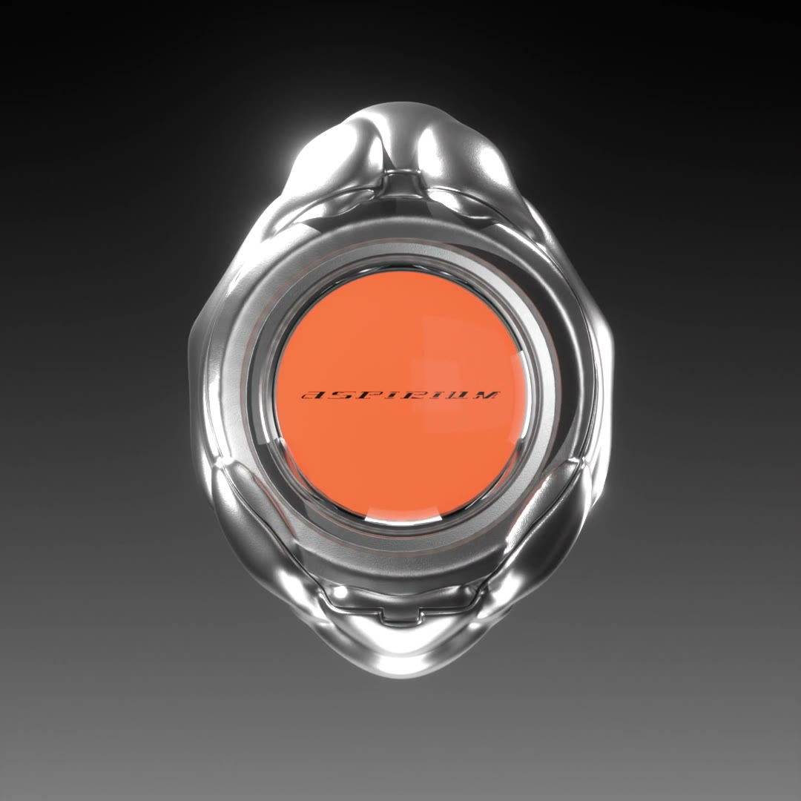

About the ring
A new kind of gem.
Gemtronic is a smart ring that turns a tiny round LCD screen into a new kind of gem. Both avant-garde jewelry and a feat of electronics that fits real function into extremely tight space, it delivers gesture controls, mini-games, a step-driven digital pet and Bluetooth phone pairing through an ESP32-C3 and its sensors.
Drag to turn it
Features